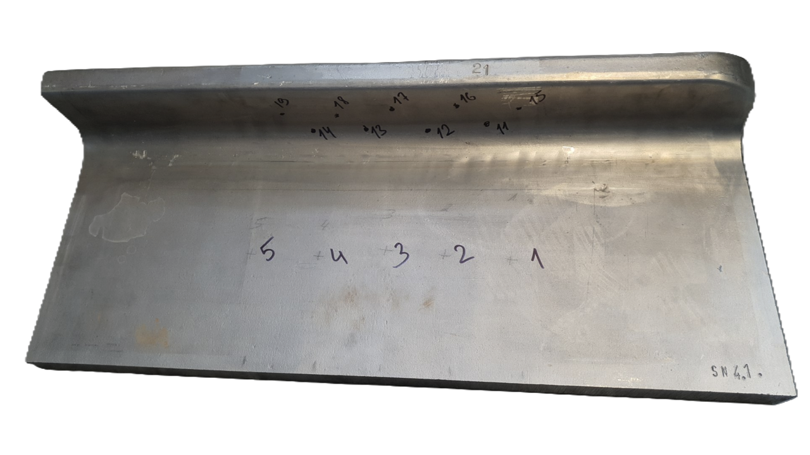
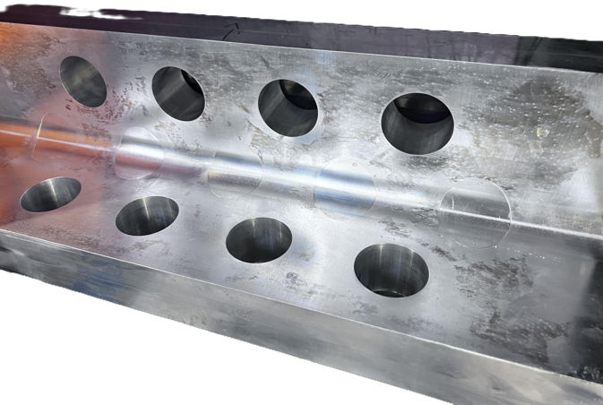
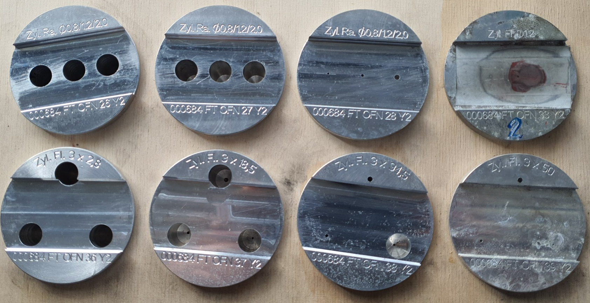
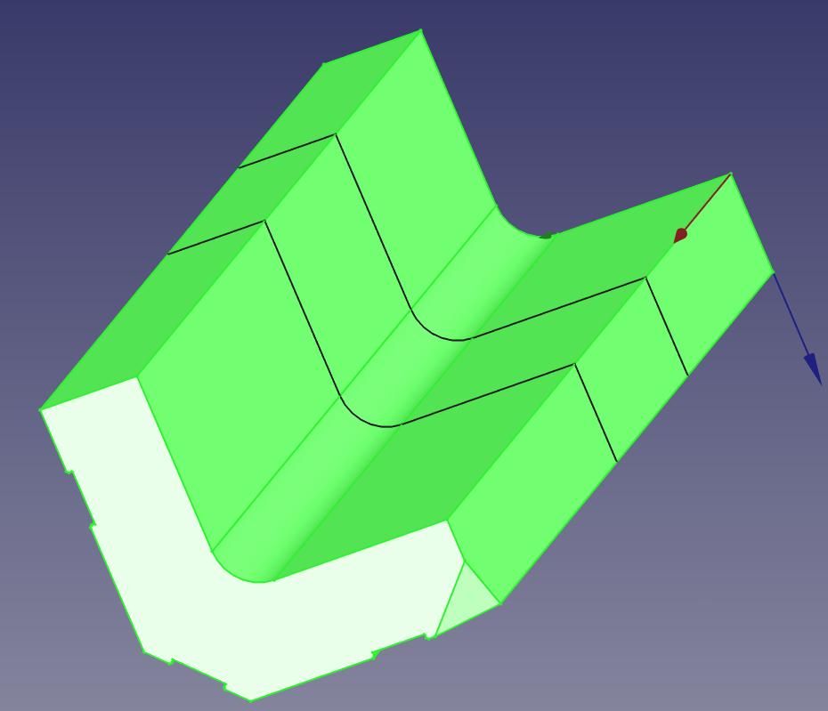
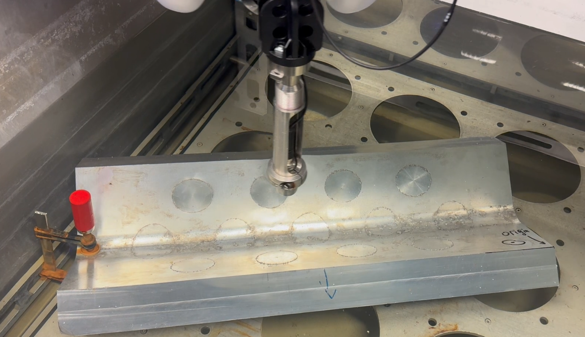
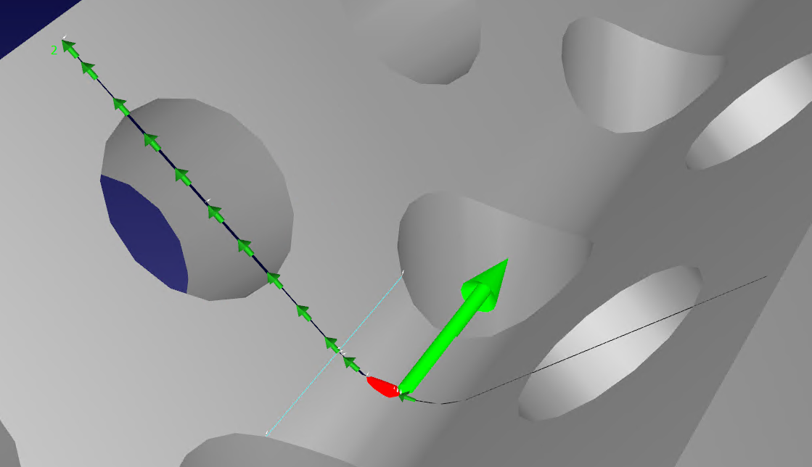
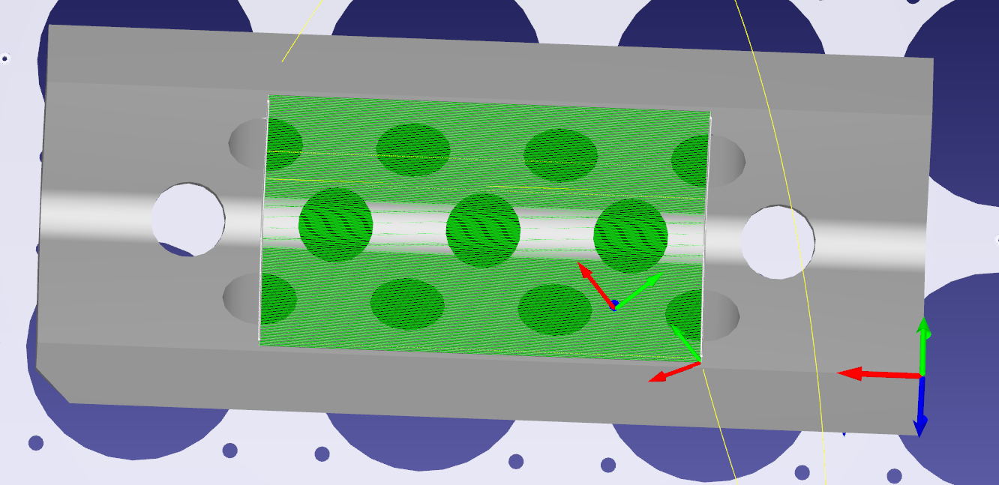
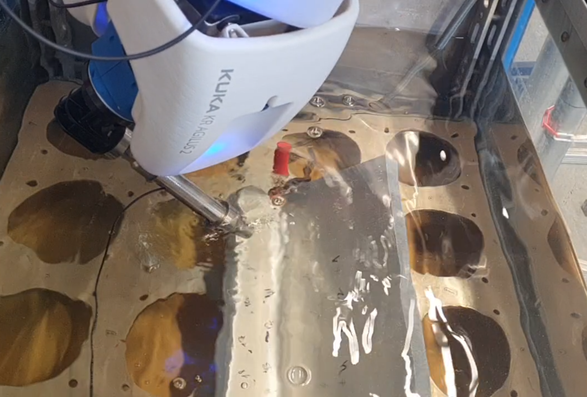
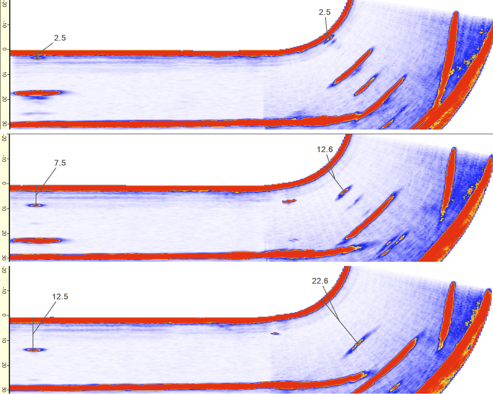
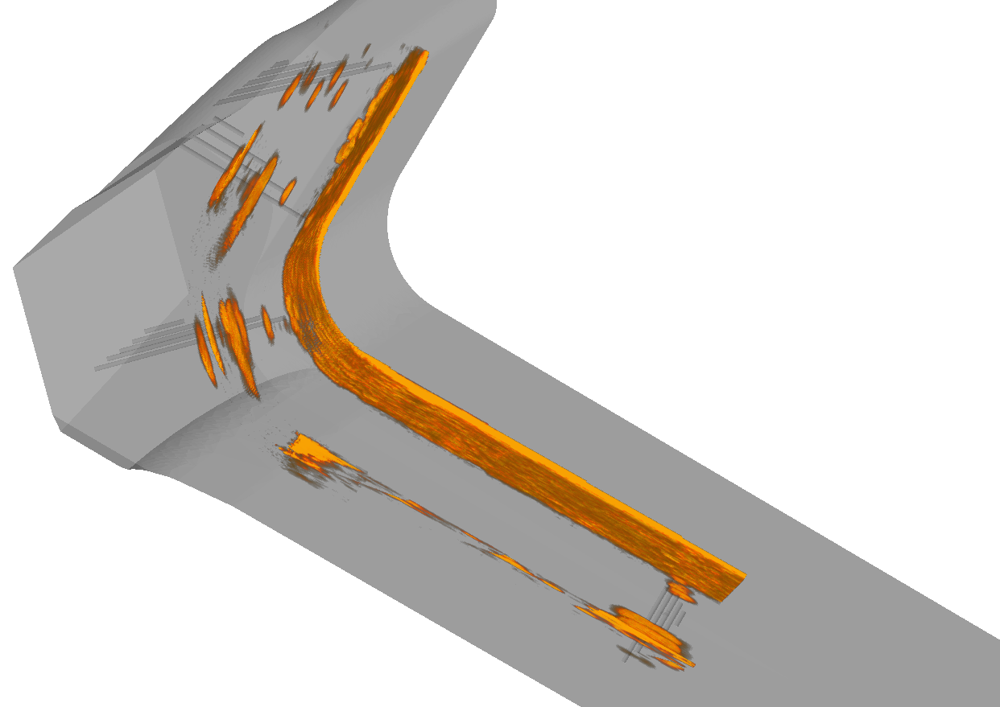

Introduction
Within the SeConRob project (Self-Configuring Multi-Step Robotic Workflows), ACS Solutions GmbH has concentrated its recent work on the robotic ultrasonic inspection of geometrically complex aerospace forgings supplied by project partner OTTO FUCHS KG. These parts represent genuine aerospace-grade forgings with complex geometry, non-parallel surfaces, and compound radii — exactly the class of component where automated volumetric inspection has historically been limited by the difficulty of adapting scan trajectories to free-form surfaces.
The following sections walk through the key steps we have completed to acquire, process, and visualise high-quality ultrasonic data from this part: defining the measurement area, performing a calibration scan, building the meander trajectory, running the actual measurement, and reconstructing the full 3-D volume.

Building the Measurement Area
The test piece provided for inspection is the verification test piece — a block that contains several known artificial reflectors (flat-bottom holes of defined size and depth). This reference specimen serves a dual purpose: it enables sensitivity calibration of the inspection system relative to the actual surface geometry of the part (including non-parallel faces, varying radii and freeform regions), and it is machined from a representative base taken from a real original forged aerospace component.
Using the verification test piece, we calibrate the system response at each point of the scanning area, compensating for signal amplitude deviations caused by surface curvature and angle variations. Only after this calibration step is the sensitivity across the entire volume reliably uniform — a prerequisite for trustworthy defect detection and sizing in a production environment.


Meander Calibration
Selecting the Scan Area in CAD
Before running any scan, an operator selects the area of interest directly in our CAD-integrated software environment. Two border curves of the future scan region are picked on the 3-D CAD model of the part. The resulting boundary points are preliminary at this stage and will be refined automatically during the subsequent calibration run. This CAD-driven approach ensures that the scan coverage always matches the actual part geometry, even for components with complex free-form surfaces.

Calibration Run — Finding the Optimal Incidence Angle
With the area defined, we initiate a calibration scan in immersion technique. The purpose of this run is to find, at each key point across the surface, the robot orientation that provides the optimal incidence angle for the ultrasonic beam — i.e., the orientation at which the amplitude of the echo from the part surface is at its maximum.
During the calibration scan the robot continuously and slightly adjusts its wrist orientation while traversing the scan area. Our measurement software analyses the ultrasonic signal in real time, searches for the orientation that produces the highest surface-echo amplitude, and saves that robot pose as a key point. This process is fully automated: no manual angular adjustment is required.


Building the Scanning Trajectory from Key Points
Once all key points are collected, our software module constructs the full scanning trajectory — a spatial meander pattern whose resolution (point spacing) can be freely configured by the operator. At each meander node the robot adopts the interpolated optimal orientation derived from the neighbouring key points, maintaining near-normal beam incidence throughout the scan.
The generated trajectory is then automatically validated for reachability and collision avoidance using our software in combination with the RoboDK API. This step catches any kinematic limitations or potential obstructions before a single measurement is taken. Prior to the real measurement, the operator can optionally perform a dry run — the robot executes the full trajectory without firing ultrasonics — to visually confirm the motion path.

Measurement
With the validated trajectory loaded, the operator starts the measurement directly from within our acquisition software. All ultrasonic acquisition parameters — gain, pulse repetition frequency, digitisation rate, gate settings — are configurable from a single interface that also controls robot motion.
Because every potential issue has already been resolved during the calibration and dry-run phases, the acquisition runs at high velocity, keeping throughput competitive with conventional fixed-frame immersion systems. Ultrasonic data and the corresponding true robot TCP (tool-centre-point) positions are saved in real time to a synchronised dataset. Recording the actual robot position rather than the nominal trajectory position is critical: it allows the reconstruction algorithm to account for any small positional deviations and produce a geometrically accurate 3-D volume.
The operator monitors acquisition quality by observing the live 1-D A-scan signal on screen. If a parameter adjustment — such as a change in amplification or scanning speed — is required after an initial pass, it can be made immediately in the software and a new scan started without any reconfiguration overhead. At the end of each measurement run the robot automatically returns to its defined home position.

Processing & Visualisation
Post-acquisition, the data are processed by a dedicated reconstruction software written in C#, highly optimised for performance. The software loads each dataset, reads the paired ultrasonic signals and true robot positions, and performs a full volumetric reconstruction. A key algorithmic contribution is an automatic amplitude-compensation algorithm that corrects for signal-amplitude deviations arising from surface curvature variations: reflectors at the same depth are displayed with a consistent amplitude regardless of local surface angle, significantly improving defect sizing accuracy.
A dedicated visualisation and analysis tool then allows the operator — and downstream process-planning modules — to evaluate the reconstruction. C-scans, B-scans, and interactive 3-D views can be generated and superimposed on the CAD model, making spatial relationships between detected reflectors and part geometry immediately visible.
A series of datasets has been acquired on the verification test piece. All scans show good resolution of the artificial defects and stable repeatability across repeated measurements. The detected reflector positions match the locations specified in the technical drawings with high accuracy, validating both the calibration procedure and the reconstruction algorithm.


Contact
For questions about the robotic UT scanning work presented here or ACS solutions for NDT automation, please visit:
ACS Solutions GmbH
acs-international.com
For questions about the SeConRob project: www.seconrob.eu